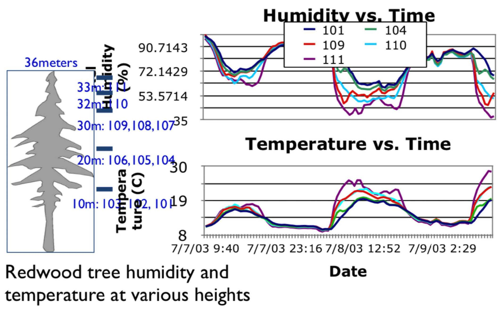
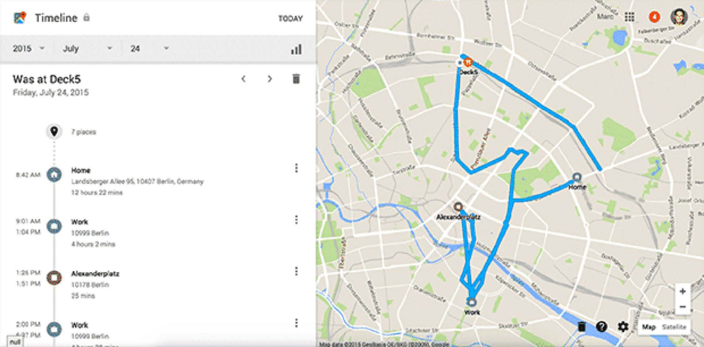
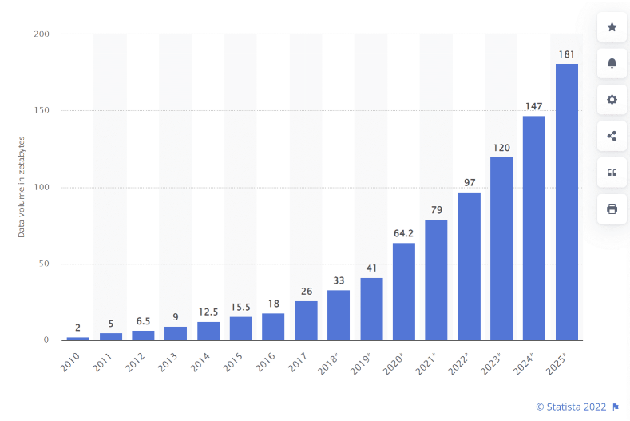
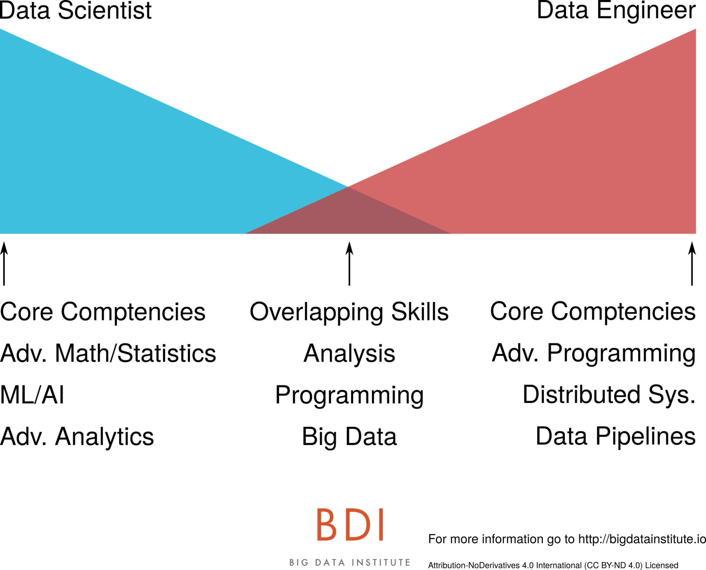
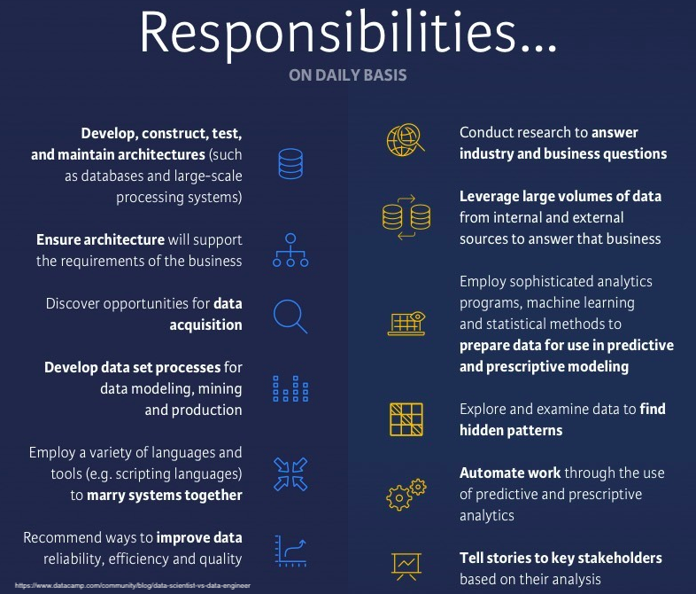
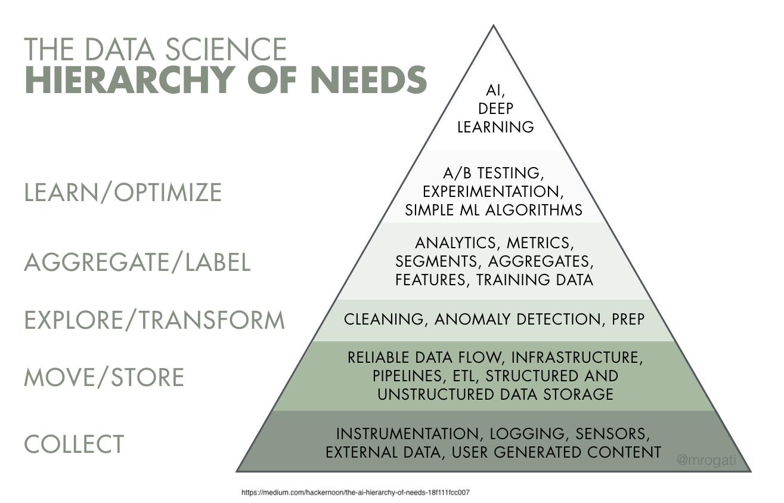
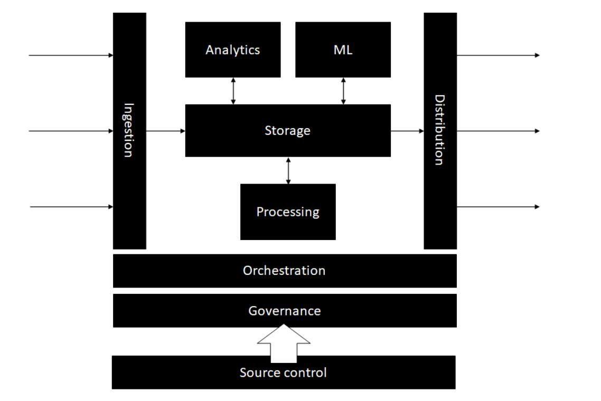
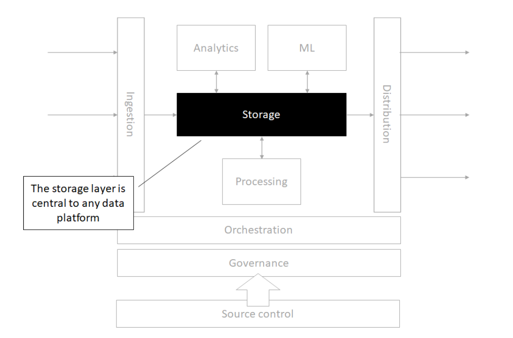
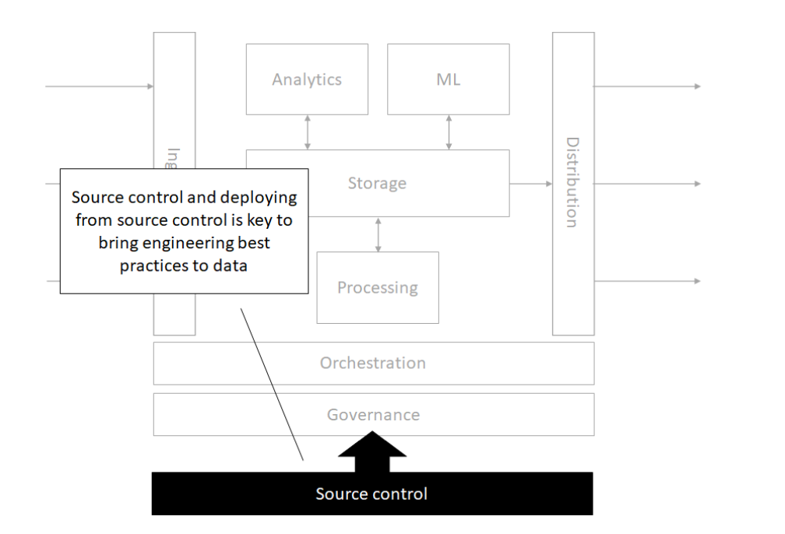
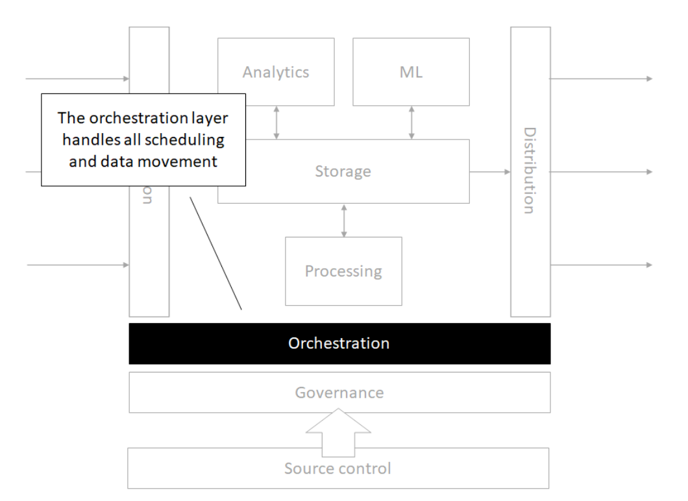

Week 1: Course Overview
DSAN 6000: Big Data and Cloud Computing
Fall 2025
Class Sessions
Agenda for today’s session
Course and syllabus overview
Big Data Concepts
- Definition
- Challenges
- Approaches
Data Engineering
Introduction to
bash- Lab: Linux command line
Course Overview
Bookmark these links!
- Course website: https://gu-dsan.github.io/6000-fall-2025/
- GitHub Organization for your deliverables: https://github.com/gu-dsan/
- GitHub Classroom: https://classroom.github.com/classrooms/34950344-georgetown-university-dsan6000-big-data-and-cloud-computing
- Slack Workspace: DSAN6000 Fall 2025 - https://dsan6000fall2025.slack.com
- Instructors email: dsan-Fall-2025@georgetown.edu
- Canvas: https://georgetown.instructure.com/courses/TBA-2025
These are also pinned on the Slack main channel
Instructional Team - Professors
- Amit Arora,
aa1603@georgetown.edu - Jeff Jacobs,
jj1088@georgetown.edu
Amit Arora, aa1603@georgetown.edu
- Principal Solutions Architect - AI/ML at AWS
- Adjunct Professor at Georgetown University
- Multiple patents in telecommunications and applications of ML in telecommunications
Fun Facts
- I am a self-published author https://blueberriesinmysalad.com/
- My book “Blueberries in my salad: my forever journey towards fitness & strength” is written as code in R and Markdown
- I love to read books about health and human performance, productivity, philosophy and Mathematics for ML. My reading list is online!
Jeff Jacobs, jj1088@georgetown.edu
- Full-time Professor at Georgetown (DSAN and Public Policy)
- Background in Computational Social Science (Comp Sci MS → Political Economy PhD → Labor Econ Postdoc)
Fun Facts
- Used Apache Airflow daily for PhD projects! (Example)
- Server admin for lab server → lab AWS account at Columbia (2015-2023) → new DSAN server (!) (2025-)
- Passion project 1: Code for Palestine (2015-2022) → YouthCode-Gaza (2023) → Ukraine Ministry of Digital Transformation (2024)
- Passion projects 2+3 [🤓]: Sample-based music production, web app frameworks
- Sleep disorder means lots of reading – mainly history! – at night
- Also teaching PPOL6805 / DSAN 6750: GIS for Spatial Data Science this semester
Instructional Team - Teaching Assistants
- Binhui Chen,
bc928@georgetown.edu - Pranav Sudhir Patil,
pp755@georgetown.edu - Ofure Udabor,
au195@georgetown.edu - Yifei Wu,
yw924@georgetown.edu - Naomi Yamaguchi,
ny159@georgetown.edu - Leqi Ying,
ly290@georgetown.edu - Xinyue (Monica) Zhang,
xz646@georgetown.edu
Binhui Chen, bc928@georgetown.edu
(Lead TA for the course!)

Ofure Udabor, au195@georgetown.edu
Yifei Wu, yw924@georgetown.edu
Naomi Yamaguchi, ny159@georgetown.edu
Leqi Ying, ly290@georgetown.edu
Xinyue (Monica) Zhang, xz646@georgetown.edu
Course Description
Data is everywhere! Many times, it’s just too big to work with traditional tools. This is a hands-on, practical workshop style course about using cloud computing resources to do analysis and manipulation of datasets that are too large to fit on a single machine and/or analyzed with traditional tools. The course will focus on Spark, MapReduce, the Hadoop Ecosystem and other tools.
You will understand how to acquire and/or ingest the data, and then massage, clean, transform, analyze, and model it within the context of big data analytics. You will be able to think more programmatically and logically about your big data needs, tools and issues.
Always refer to the syllabus and calendar in the course website for class policies.
Learning Objectives
- Setup, operate and manage big data tools and cloud infrastructure, including Spark, DuckDB, Polars, Athena, Snowflake, and orchestration tools like Airflow on Amazon Web Services
- Use ancillary tools that support big data processing, including git and the Linux command line
- Execute a big data analytics exercise from start to finish: ingest, wrangle, clean, analyze, store, and present
- Develop strategies to break down large problems and datasets into manageable pieces
- Identify broad spectrum resources and documentation to remain current with big data tools and developments
- Communicate and interpret the big data analytics results through written and verbal methods
Evaluation
- Group project : 40%
- Assignments : 30%
- Lab completions : 20%
- Quizzes : 10%
Course Materials
- Slides/labs/assignment on Website/GitHub
- Quizzes and readings in Canvas
Communication
- Slack is the primary form of communication
- Instructional team email:
dsan-Fall-2025@georgetown.edu
Slack rules
- Post any question/comment about the course, assignments or any technical issue.
- DMs are to be used sparingly
- You may not DM multiple people in the instructional team at the same time for the same issue
- Keep an eye on the questions posted in Slack. Use the search function. It’s very possible that we have already answered a questions
- You may DM us back only if we DM you first on a given issue
- Lab/assignment/project questions will only be answered up to 6 hours before something is due (i.e. 6pm on Mondays)
Midterm Project (NEW!)
- Individual assignment (not team-based)
- Timing: Around Week 5-6
- Weight: Equivalent to 2 homework assignments
- Format:
- We provide the dataset and problem statement
- You apply big data tools and techniques learned in class
- End-to-end data pipeline implementation
- Details: TBD (will be announced in Week 4)
Final Project
- Groups of 3-4 students
- Use an archive of Reddit data, augmented with external data
- Exploratory analysis
- NLP
- Machine Learning
- Writeup
- Data sourcing and ingesting
- Exploratory analysis
- Modeling
- Challenges and Learnings
- Conclusions
- Future work
BIG DATA
Where does it come from?
How is it being created?
In one minute of time (2018)
In one minute of time (2019)
In one minute of time (2020)
In one minute of time (2021)
In one minute of time (2025)
Every 60 seconds in 2025:
- ChatGPT serves millions of requests (exact numbers proprietary)
- 500 hours of video uploaded to YouTube
- 1.04 million Slack messages sent
- 362,000 hours watched on Netflix
- 5.9-11.4 million Google searches
- $443,000 spent on Amazon
- AI-generated images created at massive scale (metrics not publicly available)
- 347,200 posts on X (formerly Twitter)
- 231-250 million emails sent
A lot of it is hapenning online.
We can record every:
- click
- ad impression
- billing event
- video interaction
- server request
- transaction
- network message
- fault
- …

It can also be user-generated content:
- Instagram posts & Reels
- X (Twitter) posts & Threads
- TikTok videos
- YouTube Shorts
- Reddit discussions
- Discord conversations
- AI-generated content (text, images, code)
- …
But health and scientific computing create a lot too!

There’s lots of graph data too
Many interesting datasets have a graph structure:
- Social networks
- Google’s knowledge graph
- Telecom networks
- Computer networks
- Road networks
- Collaboration/relationships
Some of these are HUGE

Apache (web server) log files

System log files

Internet of Things (IoT) in 2025
75 billion connected devices generating data:
- Smart home devices (Alexa, Google Home, Apple HomePod)
- Wearables (Apple Watch, Fitbit, Oura rings)
- Connected vehicles & self-driving cars
- Industrial IoT sensors
- Smart city infrastructure
- Medical devices & remote patient monitoring

Smartphone Location Data

Where else?
The Internet
Transactions
Databases
Excel
PDF Files
Anything digital (music, movies, apps)
Some old floppy disk lying around the house
Typical Real-World Scenarios in 2025
Scenario 1: Traditional Big Data
You have a laptop with 16GB of RAM and a 256GB SSD. You are given a 1TB dataset in text files. What do you do?
Scenario 2: AI/ML Pipeline
Your company wants to build a RAG system using 10TB of internal documents. You need sub-second query response times. How do you architect this?
Scenario 3: Real-Time Analytics
You need to process 1 million events/second from IoT devices and provide real-time dashboards with <1s latency. What’s your stack?
What is Big Data?
Let’s discuss!

Big Data Definitions
Wikipedia
“A collection of datasets so large and complex that it becomes difficult to process using traditional tools and applications. Big Data technologies describe a new generation of technologies and architectures designed to economically extract value from very large volumes of a wide variety of data, by enabling high-velocity capture, discover and/or analysis”
O’Reilly
“Big data is when the size of the data itself becomes part of the problem”
Frameworks for Thinking About Big Data
IBM (The 3 V’s)
- Volume (Gigabytes → Exabytes → Zettabytes)
- Velocity (Batch → Streaming → Real-time AI inference)
- Variety (Structured, Unstructured, Embeddings)
Additional V’s for 2025
- Variability
- Veracity
- Visualization
- Value
- Vectors (embeddings for AI/ML)
- Versatility (multi-modal data)
Data “Size”
\[ \text{``Size''} = f(\text{Processing Ability}, \text{Storage Space}) \]
- Can you analyze/process your data on a single machine?
- Can you store (or is it stored) on a single machine?
- Can you serve it fast enough for real-time AI applications?
If any of of the answers is no then you have a big-ish data problem!
Big Data in the Age of Generative AI
The New Data Landscape (2025)
Training Foundation Models
- GPT-4: Trained on about 13 trillion tokens
- Llama 3: 15 trillion tokens
- Google Gemini: Multi-modal training (text, images, video)
- Each iteration requires petabytes of curated data
Data Requirements Have Exploded
- 2020: BERT trained on 3.3 billion words
- 2023: GPT-4 trained on ~13 trillion tokens
- 2024: Llama 3 trained on 15+ trillion tokens
Big Data Infrastructure: Data Lakes, Warehouses
Traditional Use Cases:
- Business intelligence
- Analytics & reporting
- Historical data storage
Modern AI Use Cases:
- Training data repositories
- Vector embeddings storage
- RAG (Retrieval-Augmented Generation) context
- Fine-tuning datasets
- Evaluation & benchmark data
RAG and Context Engineering: The New Data Pipeline
Key Components:
- Data Lakes (S3, Azure Data Lake): Store massive unstructured data
- Data Warehouses (Snowflake, BigQuery): Structured data for context
- Vector Databases (Pinecone, Weaviate, Qdrant): Semantic search
- Embedding Models: Convert data to vectors
- Orchestration (Airflow, Prefect): Manage the pipeline
MCP Servers & Agentic AI
Model Context Protocol (MCP)
- Open protocol for connecting AI assistants to data sources
- Standardized way to expose tools and data to LLMs
- Enables “agentic” behavior - AI that can act autonomously
MCP in Production
Examples:
- AI agents querying Snowflake for real-time analytics
- Autonomous systems updating data lakes based on predictions
- Multi-agent systems coordinating through shared data contexts
Data Quality for AI
(Why Data Quality Matters More Than Ever)
Garbage In, Garbage Out - Amplified:
- Bad training data → Biased models
- Incorrect RAG data → Hallucinations
- Poor data governance → Compliance issues
Data Quality Challenges in 2025
- Scale: Validating trillions of tokens
- Diversity: Multi-modal, multi-lingual data
- Velocity: Real-time data for online learning
- Veracity: Detecting AI-generated synthetic data
Real-World Big Data / AI Examples
Netflix
- Data Scale: 260+ million subscribers generating 100+ billion events/day
- AI Use: Personalization, content recommendations, thumbnail generation
- Stack: S3 → Spark → Iceberg → ML models → Real-time serving
Uber
- Data Scale: 35+ million trips per day, petabytes of location data
- AI Use: ETA prediction, surge pricing, driver-rider matching
- Stack: Kafka → Spark Streaming → Feature Store → ML Platform
OpenAI
- Data Scale: Trillions of tokens for training, millions of queries/day
- AI Use: GPT models, DALL-E, embeddings
- Stack: Distributed training → Vector DBs → Inference clusters
Emerging Trends (2025-2027)
Unified Platforms:
- Data lakes becoming “AI lakes”
- Integrated vector + relational databases
- One-stop shops for data + AI (Databricks, Snowflake Cortex)
Edge Computing + AI:
- Processing at the data source
- Federated learning across devices
- 5G enabling real-time edge AI
Synthetic Data:
- AI generating training data for AI
- Privacy-preserving synthetic datasets
Relative Data Sizes
| Can be processed on single machine? | No | Medium (Parallel Processing) |
Big! Parallel + Distributed Processing |
| Yes | Small (Your Laptop) |
Medium (Data Streaming) |
|
| Yes | No | ||
| Can be stored on single machine? | |||
What You’ll Learn in This Course
Modern Big Data Stack (2025)
Query Engines:
- DuckDB - In-process analytical database
- Polars - Lightning-fast DataFrame library
- Spark - Distributed processing at scale
Data Warehouses & Lakes:
- Snowflake - Cloud-native data warehouse
- Athena - Serverless SQL on S3
- Iceberg - Open table format
AI/ML Integration:
- Vector databases for embeddings
- RAG implementation patterns
- Streaming with Spark Structured Streaming
Orchestration:
- Airflow for pipeline management
- Serverless with AWS Lambda
Data Types
- Structured
- Unstructured
- Natural language
- Machine-generated
- Graph-based
- Audio, video, and images
- Streaming
Big Data vs. Small Data I
| Small Data is usually… | On the other hand, Big Data… | |
|---|---|---|
| Goals | gathered for a specific goal | may have a goal in mind when it’s first started, but things can evolve or take unexpected directions |
| Location | in one place, and often in a single computer file | can be in multiple files in multiple servers on computers in different geographic locations |
| Structure/Contents | highly structured like an Excel spreadsheet, and it’s got rows and columns of data | can be unstructured, it can have many formats in files involved across disciplines, and may link to other resources |
| Preparation | prepared by the end user for their own purposes | is often prepared by one group of people, analyzed by a second group of people, and then used by a third group of people, and they may have different purposes, and they may have different disciplines |
Big Data vs. Small Data II
| Small Data is usually… | On the other hand, Big Data… | |
|---|---|---|
| Longevity | kept for a specific amount of time after the project is over because there’s a clear ending point. In the academic world it’s maybe five or seven years and then you can throw it away | contains data that must be stored in perpetuity. Many big data projects extend into the past and future |
| Measurements | measured with a single protocol using set units and it’s usually done at the same time | is collected and measured using many sources, protocols, units, etc |
| Reproducibility | be reproduced in their entirety if something goes wrong in the process | replication is seldom feasible |
| Stakes | if things go wrong the costs are limited, it’s not an enormous problem | can have high costs of failure in terms of money, time and labor |
| Access | identified by a location specified in a row/column | unless it is exceptionally well designed, the organization can be inscrutable |
| Analysis | analyzed together, all at once | is ordinarily analyzed in incremental steps |
Challenges of Working with Large Datasets
| The V | The Challenge |
|---|---|
| Volume | data scale |
| Value | data usefulness in decision making |
| Velocity | data processing: batch or stream |
| Viscosity | data complexity |
| Variability | data flow inconsistency |
| Volatility | data durability |
| Viability | data activeness |
| Validity | data properly understandable |
| Variety | data heterogeneity |
Thinking About Big Data Workflows
William Cohen (Director, Research Engineering, Google):
- Working with big data is not about…
- Code optimization
- Learning the details of today’s hardware/software (they are evolving…)
- Working with big data is about understanding:
- The cost of what you want to do
- What the tools that are available offer
- How much can be accomplished with linear or nearly-linear operations
- How to organize your computations so that they effectively use whatever’s fast
- How to test/debug/verify with large data
- Recall that traditional tools like
RandPythonare single threaded (by default)
Tools at-a-glance
Languages, libraries, and projects
- Python
- Apache Arrow
- Apache Spark
- SQL
- Apache Hadoop (briefly)
Cloud Services
- Amazon Web Services (AWS)
- Azure
Other:
Additional links of interest
Matt Turck’s Machine Learning, Artificial Intelligence & Data Landscape (MAD)
Data Engineering
Data Scientist vs. Data Engineer
In this course, you’ll augment your data scientist skills with data engineering skills!

Data Engineer Responsibilities

Data Engineering: Levels 2 and 3

Modern Data Architecture
Architecture

Storage

Source control

Orchestration

Processing

Analytics

Machine Learning

Governance

Time for Lab! Linux Command Line
The Terminal
- Terminal access was THE ONLY way to do programming
- No GUIs! No Spyder, Jupyter, RStudio, etc.
- Coding is still more powerful than graphical interfaces for complex jobs
- Coding makes work repeatable

BASH
- Created in 1989 by Brian Fox: “Bourne-Again Shell”
- Brian Fox also built the first online interactive banking software
- BASH is a command processor
- Connection between you and the machine language and hardware

The Prompt
username@hostname:current_directory $What do we learn from the prompt?
- Who you are -
username - The machine where your code is running -
hostname - The directory where your code is running -
current_directory - The shell type -
$- this symbol means BA$H
Syntax
COMMAND -F --FLAGCOMMANDis the program, everything after that = argumentsFis a single letter flag,FLAGis a single word or words connected by dashes. A space breaks things into a new argument.- Sometimes argument has single letter and long form versions (e.g.
FandFLAG)
COMMAND -F --FILE file1- Here we pass a text argument
"file1"as the value for theFILEflag -hflag is usually to get help. You can also run themancommand and pass the name of the program as the argument to get the help page.
Let’s try basic commands:
dateto get the current datewhoamito get your user nameecho "Hello World"to print to the console
Examining Files
- Find out your Present Working Directory
pwd - Examine the contents of files and folders using
ls - Make new files from scratch using
touch - Glob: “Mini-language” for selecting files with wildcards
\*for wild card any number of characters\?for wild card for a single character[]for one of many character options!for exclusion[:alpha:],[:alnum:],[:digit:],[:lower:],[:upper:]
Interacting with Files
Now that we know how to navigate through directories, we need commands for interacting with files…
mvto move files from one location to another- Can use glob here -
?,*,[], …
- Can use glob here -
cpto copy files instead of moving- Can use glob here -
?,*,[], …
- Can use glob here -
mkdirto make a directoryrmto remove filesrmdirto remove directoriesrm -rfto blast everything! WARNING!!! DO NOT USE UNLESS YOU KNOW WHAT YOU ARE DOING
Using BASH for Data Exploration
head FILENAME/tail FILENAME- glimpsing the first / last few rows of datamore FILENAME/less FILENAME- viewing the data with basic up / (up & down) controlscat FILENAME- print entire file contents into terminalvim FILENAME- open (or edit!) the file in vim editorgrep FILENAME- search for lines within a file that match a regex expressionwc FILENAME- count the number of lines (-lflag) or number of words (-wflag)
Pipes and Arrows
|sends the stdout to another command (is the most powerful symbol in BASH!)>sends stdout to a file and overwrites anything that was there before>>appends the stdout to the end of a file (or starts a new file from scratch if one does not exist yet)<sends stdin into the command on the left
Alias and User Files
/.bashrcis where your shell settings are locatedHow many processes?
whoami | xargs ps -u | wc -lHard to remember full command! Let’s make an alias
General syntax:
alias alias_name="command_to_run"For our case:
alias nproc="whoami | xargs ps -u | wc -l"Now we need to put this alias into the .bashrc
alias nproc="whoami | xargs ps -u | wc -l" >> ~/.bashrcYour commands get saved in
~/.bash_history
Process Management
- Use
psto see your running processes - Use
topor even betterhtopto see all running processes - Install htop via
sudo yum install htop -y - To kill a broken process: first find the process ID (PID)
- Then use
kill [PID NUM]to “ask” the process to terminate. If things get really bad:kill -9 [PID NUM] - To kill a command in the terminal window it is running in, try using Ctrl + C or Ctrl + /
- Run
caton its own to let it stay open. Now open a new terminal to examine the processes and find the cat process.
Try playing a Linux game!
Bash crawl is a game to help you practice your navigation and file access skills. Click on the binder link in this repo to launch a jupyter lab session and explore!